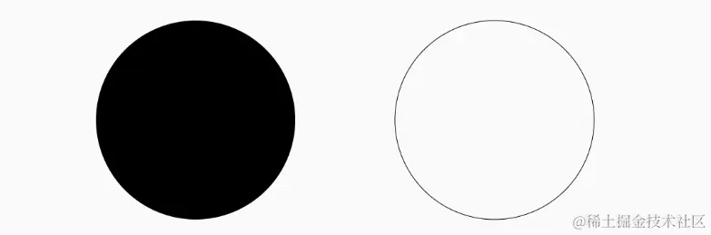
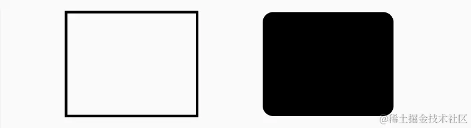
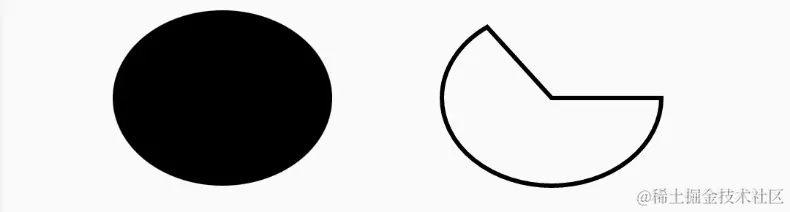

- 01 前言-教程内容导读.md.html
- 02 Flutter 开发环境的搭建.md.html
- 03 新手村基础 Dart 语法 (上).md.html
- 04 新手村基础 Dart 语法 (下).md.html
- 05 Flutter 计数器项目解读.md.html
- 06 猜数字界面交互与需求分析.md.html
- 07 使用组件构建静态界面.md.html
- 08 状态数据与界面更新.md.html
- 09 校验结果与提示信息.md.html
- 10 动画使用与状态周期.md.html
- 11 猜数字整理与总结.md.html
- 12 电子木鱼界面交互与需求分析.md.html
- 13 电子木鱼静态界面构建.md.html
- 14 计数变化与音效播放.md.html
- 15 弹出选项与切换状态.md.html
- 16 用滑动列表展示记录.md.html
- 17 电子木鱼整理与总结.md.html
- 18 白板绘制界面交互与需求分析.md.html
- 19 认识自定义绘制组件.md.html
- 20 通过手势在白板上绘制.md.html
- 21 白板画笔的参数设置.md.html
- 22 撤销功能与画板优化.md.html
- 23 应用界面整合.md.html
- 24 数据的持久化存储.md.html
- 25 网络数据的访问.md.html
- 26 教程总结与展望.md.html
- 捐赠
19 认识自定义绘制组件
1.从绘制点开始说起
我们先通过绘制点来了解一下 Flutter 中绘制的使用方式。左图中是新建的 Paper 组件作为白板主界面；右图在白板的指定坐标处绘制了四个方形的点：
| 空白 | 绘制四个点 |
|---|---|
Paper 组件如下，由于之后需要进行切换画笔颜色、粗细的操作；涉及到界面中状态的变化，所以这里继承自 StatefulWidget，在状态类的 build 方法中，完成界面的构建逻辑。 PaperAppBar 是单独封装的头部标题组件，和之前类似，就不赘述了；现在主要是想让 body 处设置为可绘制的组件。
class Paper extends StatefulWidget {
const Paper({Key? key}) : super(key: key);
@override
State<Paper> createState() => _PaperState();
}
class _PaperState extends State<Paper> {
@override
Widget build(BuildContext context) {
return Scaffold(
appBar: PaperAppBar(onClear: _clear,),
body: //TODO
);
}
void _clear() {}
}
我们已经知道， Flutter 中的所有界面呈现，都和 Widget 息息相关，绘制也不例外。在 Flutter 中接触到 Canvas 最常用的方式是 CustomPaint 组件 + CustomPainter 画板组合。下面代码，将 body 设置为 CustomPaint 组件；CustomPaint 在构造时传入 painter 参数是 CustomPainter 的子类。
自定义绘制，就是指继承 CustomPainter 完成绘制逻辑，比如这里的 PaperPainter 画板。另外，我们希望画布的尺寸填充剩余空间，可以将 child 指定为 ConstrainedBox ，并通过 BoxConstraints.expand() 的约束。
body: CustomPaint(
painter: PaperPainter(),
child: ConstrainedBox(constraints: const BoxConstraints.expand()),
),
也就是说，对于自定义绘制来说，最重要的是 CustomPainter 子类代码的实现，这里通过 PaperPainter 来完成绘制逻辑。在 paint 回调中，可以访问到 Canvas 对象和画板的尺寸 Size 。
在该方法中通过调用 Canvas 的相关方法就可以进行绘制。比如这里使用 drawPoints 绘制点集，其中需要传入三个参数，分别是:
- 点的模式
PointMode: 共三种模式， points、lines、polygon - 点集
List<Offset>： 点的坐标列表 - 画笔
Paint: 绘制时的配置参数
class PaperPainter extends CustomPainter{
@override
void paint(Canvas canvas, Size size) {
List<Offset> points = const [
Offset(100,100),
Offset(100,150),
Offset(150,150),
Offset(200,100),
];
Paint paint = Paint();
paint.strokeWidth = 10;
canvas.drawPoints(PointMode.points, points , paint);
}
@override
bool shouldRepaint(covariant CustomPainter oldDelegate) => true;
}
上面点模式是 PointMode.points ，也就是绘制一个个点。如下是另外两者模式的效果，看起来也很清晰：PointMode.lines 会将点集分为若干对，没对连接成线；PointMode.polygon 会将点依次连接；
| PointMode.lines | PointMode.polygon |
|---|---|
到这里，就通过 Canvas 完成了一个最基础的点集绘制案例，当前代码位置 paper.dart 。接下来，介绍一下 Paint 对象，看看你的画笔有哪些功能。
2. 简单认识画笔的属性
可以先回想一下，我们现实中画画时用的笔有哪些特性：很自然的可以想到: 颜色、粗细 。 这两个配置项分别对应 strokeWidth 和 color 属性，在绘制之前通过直接 paint 对象设置即可：
Paint paint = Paint();
paint.strokeWidth = 10;
paint.color = Colors.red;
| 粗细 strokeWidth | 颜色 color |
|---|---|
之前线间的连接很突兀，可以使用将 strokeCap 设置为 StrokeCap.round 让线编程圆头：
paint.strokeCap = StrokeCap.round;
| StrokeCap.butt | StrokeCap.round |
|---|---|
这里面向新手，对于绘制的知识也点到为止，能满足当前需求即可，不会进行非常系统的介绍。不过感兴趣的可以看我的 《Flutter 绘制指南 - 妙笔生花》 小册，其中对于绘制方方面面都介绍的比较详细。
3. 简单的基础图形绘制
Canvas 中提供了一些基础图形的绘制，比如 圆形、矩形、圆角矩形、椭圆、圆弧 等，这里简单了解一下。
drawCircle 绘制圆形: 三个入参分别是圆心坐标 Offset、半径 double 、 画笔 Paint。
另外，Paint 默认是填充样式，如下左图会填满内部；可以将 style 设置为 PaintingStyle.stroke变成线型模式，如下右图：

@override
void paint(Canvas canvas, Size size) {
Paint paint = Paint();
canvas.drawCircle(Offset(100, 100), 50, paint);
paint.style = PaintingStyle.stroke;
canvas.drawCircle(Offset(250, 100), 50, paint);
}
drawRect 绘制矩形：两个入参分别是矩形 Rect、画笔 Paint。 drawRRect 绘制圆角矩形：两个入参分别是矩形 RRect、画笔 Paint。

Paint paint = Paint();
paint.style = PaintingStyle.stroke;
paint.strokeWidth = 2;
// 绘制矩形
Rect rect = Rect.fromCenter(center: Offset(100, 100), width: 100, height: 80);
canvas.drawRect(rect, paint);
// 绘制圆角矩形
paint.style = PaintingStyle.fill;
RRect rrect = RRect.fromRectXY(rect.translate(150, 0), 8, 8);
canvas.drawRRect(rrect, paint);
drawOval 绘制椭圆：两个入参分别是矩形 Rect、画笔 Paint。 drawArc 绘制圆弧：五个入参分别是矩形 RRect、起始弧度 double、扫描弧度 double、是否闭合 bool、画笔 Paint。

Paint paint = Paint();
paint.strokeWidth = 2;
// 绘制椭圆
Rect overRect = Rect.fromCenter(center: Offset(100, 100), width: 100, height: 80);
canvas.drawOval(overRect, paint);
// 绘制圆弧
canvas.drawArc(overRect.translate(150, 0), 0, pi*1.3,true,paint);
4. 本章小结
本章主要介绍了如果在 Flutter 中通过 Canvas 自定义绘制内容。界面就相当于一张白纸、绘制接口方法就相当于画笔，使用已经存在的组件固然简单，但学会自己控制画笔绘制内容可以创造更多的精彩。当然，想要精通绘制也不是一朝一夕可以达成的，但凡工艺技能，都是熟能生巧。
这里只是简单认识了在 Flutter 中使用 Canvas 绘制的方式，接下来将结合手势和绘制，完成在手指在界面上拖拽留下痕迹的绘制效果。
© 2019 - 2023 Liangliang Lee. Powered by gin and hexo-theme-book.